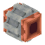
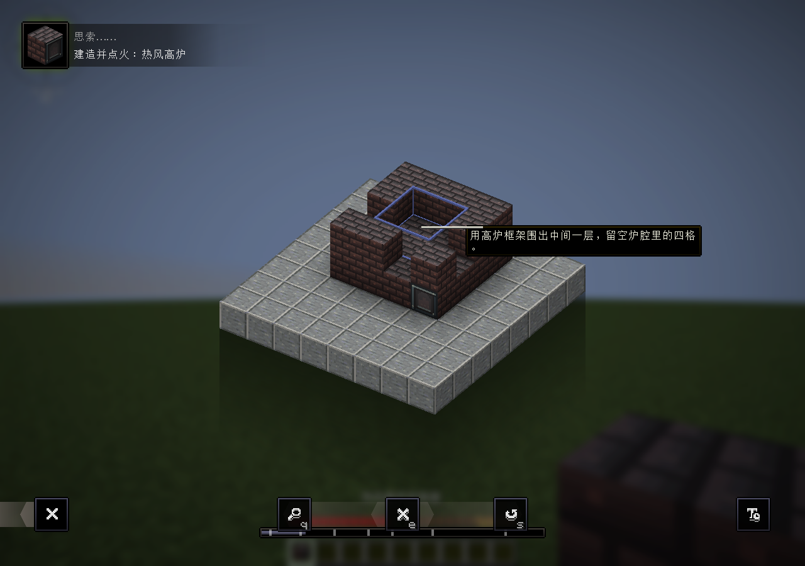
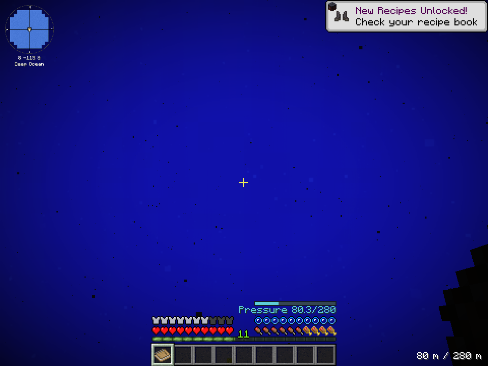

精炼冶金
高炉、炼油与内燃机
下界现场采矿，带回高炉炉料。暮色塔和天境银殿的战利品用于幽泪样本。
本章主线
-

升级镍钢热风高炉
用陀螺飞行芯片升级炉圈，带 III 级切削工具下界取钨和钴。
-
制冥火构件
用镍钢、钨和钴加工冥火构件，开始制作镍钢耐压内衬。
-

造潜艇，采两种种子
接通压载和供氧，从密闭舱采回灯藻种子和盐根种子。
-

制下界飞行核心
备下界合金碎片和幽泪样本，用采回的种子校准，开启深层矿业。


Ponder 的蓝线标出中间层要留空的四格。准备本章第一座镍钢高炉时，可按图核对框架与炉腔。
深海探索与远景
- 启动采样
- 深度至少 20 格
- 接近野生植株
- 采样距离不超过 8 格
- 装配前带回
- 灯藻与盐根种子


气泡上方为当前等效水深与装备上限。图中穿齐铜潜水套装，读数为 80.3 / 280 米。
潜艇搭建、供氧与采样
潜艇装备。完成冥火构件后，用镍钢耐压内衬制作本章主线所需的潜艇部件。用船壳围出封闭的乘员舱，将朝向海水的压载排口经水泵控制器接到潜艇压载水罐。用物理组装器组装潜艇，给水泵提供旋转动力，再在舰载计算机上设定深度。
水下推进。在船尾两侧各装一只潜艇螺旋桨，并分别接入可调速的旋转动力。通过两侧的转速差转向。
舱内供氧。给电解器供水和动力，用管道把氧气送入氧气扩散器。用红石信号开启扩散器，确认封闭舱内持续供氧后再下潜。
海底采样。在新生成的深海海床寻找微微发光的野生灯藻和盐根，植株位于水面下约 28 至 60 格。把深海采样器装在潜艇的干燥密闭舱内，向压载水罐注水并保持供氧，下潜至海面以下至少 20 格。驶到采样器距野生植株不超过 8 格时，用空的主手右击采样器，从最近的植株取得一粒种子。
校准与交接。拿到首次采样记录，并带回灯藻种子和盐根种子，完成「深海远征 · 舱内采样」。装配下界飞行核心时，用幽泪样本校准后，在压制前依次用两种种子校准。机械手保留种子，取回后留给第五章的海上种植平台。
水下矢炮
水下矢炮。可用镍钢耐压内衬制作矢炮，在首次采样前装到潜艇上。炮座的基础承压深度为 300 米，整艇的安全深度仍以最薄弱的受压部位为准。用一块铁板和两根竹子制作 16 枚水压矢。将后轴接到至少 32 RPM 的机械动力，从侧面或后方装填一枚水压矢，待蓄力完成后仍从侧面或后方用空主手右击发射。潜行右击可退弹。操作员可留在干燥密闭舱内，让炮口至目标之间的水下射线保持通畅。查看各鱼类的栖地。
海沟、承压、照明与远景
主世界海域。Next 使用 Open Seas 地形配置配合 Tectonic 和 Terralith，拉宽海域并加深部分深海海床。已有存档可前往尚未生成的区域寻找新海域，新旧区块交界处可能出现地形接缝。到达潜点后，按水面到海床的距离规划下潜。
深海海沟。新生成的深海偶尔会出现水深可达 200 米的海沟。测试种子 579262 的 X 1634、Z −8192 处，海床位于 Y −138，Y −137 到 Y 62 连续 200 格均为海水水源。沿较浅的台地可寻找采样用的野生灯藻和盐根。
船壳承压。默认 HYBRID 模式会按舱壁形状修正材料的承压基准，整艇的安全深度由最薄弱的受压部位决定。宽而平的单层舱壁较弱，缩窄舱板、加厚或加肋可提高承压。出航前在舰载计算机运行检测，查看安全深度和最薄弱方块。超过安全深度可能使舱壁开裂、舱室进水。
材料参考。单块材料的基准水深为普通玻璃和海晶灯 28 米、橡木木板 44 米、石头 68 米、深板岩 80 米、铁块 101 米。铜制耐压玻璃和铁制耐压玻璃的基准均为 700 米，适合做舷窗。测试艇记录的整艇安全深度为 56 米，下潜时可用压力表查看本艇的深度和承压状态。
潜水压力显示。在水下，原版氧气气泡旁显示当前等效水深和装备的耐压上限。基础耐压为 120 米。穿齐 Create 的铜潜水头盔和铜潜水靴，以及 Deep Seas 的潜水胸甲和潜水护腿后，耐压为 280 米。接近上限时出现警告，进入干燥密闭舱后隐藏读数。
水下照明。天光随下潜减弱，水雾也会缩短视野。实测一处海沟的天光等级在水面上方为 15，在水面下 24 米处为 0。关闭 Iris 光影包时，Vortex 会渲染水下光柱，默认会给 Deep Seas 等自带的发光方块加上雾中辉光。海晶灯使用原版方块光，可装在耐压玻璃内侧照亮舱室，或附装在完整船壳外作标灯。
远景。Distant Horizons 在客户端用低细节模型显示远方地形。多人游戏时，远景随客户端接收到的区块逐步补齐。默认远景半径为 64 区块，远距离后台生成已关闭。在「选项」中点击视野滑块旁的 Distant Horizons 按钮可调节远景半径或关闭远景。
查看完整依赖图
陀螺飞行芯片
- 规划解锁
- 镍钢高炉升级件
- 说明
- 完成「蒸汽工坊」带来本章的冶炼升级。
镍钢高炉升级件
- 规划前置
- 陀螺飞行芯片、上一章镍钢、合格火源和可取得的炉体材料
- 规划解锁
- 精炼冶金冶炼能力
- 产率路线
- 二次粉碎＋洗矿液＋磁选 · 平均 52.65 铁粒当量
- 装配
- 制作时投入芯片，部件装进工位或组成炉圈。节点使用游戏中已有材料的图标。
精炼冶金冶炼能力
- 规划前置
- 镍钢高炉升级件
- 规划解锁
- 本章镐与动力钻头
- 冶炼限制
- 陀螺飞行芯片和上一章镍钢开启热风高炉与镍钢外圈。白钨矿和黑钨矿用对应炉料。高炉按控制器额定档、整圈最弱材料档、当前热风允许档中的最低值运行，还须达到配方的最小炉腔。
- 说明
- 用蒸汽工坊的镍钢制先遣切削工具，再下界采白钨和黑钨。冶金提升开放最高收率。
本章镐与动力钻头
- 规划前置
- 精炼冶金冶炼能力
- 规划解锁
- 白钨矿、黑钨矿
- 说明
- 先用上一章已有材料制造合格钻头部件。Create 动力钻头在合成时消耗这个部件，成品继承它的挖掘等级。
冥火构件
- 辅矿
- 钴锭计划作为冥火构件的耐热辅料。
- 规划前置
- 钨锭
- 规划解锁
- 镍钢耐压内衬与潜艇装备、下界飞行核心、第 2 档锅炉、第 2 档烈焰人燃烧室、第 2 档矿场控制器、多方块磨坊、燃料化工与初级柴油内燃机
- 说明
- 冥火构件为本章初级门槛。以本章钨材与上章镍钢配合现有部件做首批耐热件，再扩建第二档矿场。
下界飞行核心
- 辅矿
- 下界合金碎片用于下界飞行核心。
- 现服下游
- 蒸汽喷口
- 现服前置
- 幽泪样本
- 规划前置
- 冥火构件
- Next 任务前置
- 完成「深海远征 · 舱内采样」
- 装配
- 幽泪样本校准后，依次用灯藻种子和盐根种子校准，再压制。两种种子留在机械手中。
- 规划解锁
- 深层矿业冶炼能力
- 说明
- 下界飞行核心开启深层矿业。冥火构件解锁第二档锅炉、烈焰人燃烧室与矿场。
白钨矿
- 规划前置
- 本章镐与动力钻头
- 现服下游
- 白钨矿钨酸盐
- 说明
- 到下界白钨矿裂隙开采，富集后炼出钨，供热工件和下一章刀头。
黑钨矿
- 规划前置
- 本章镐与动力钻头
- 现服下游
- 黑钨矿钨酸盐
- 说明
- 在下界白钨矿裂隙采集伴生黑钨矿，精炼回收钨和铁副产。
深层矿业冶炼能力
- 规划前置
- 下界飞行核心
- 说明
- 开启下一章可制的切削工具。
第 2 档锅炉
- 规划前置
- 冥火构件
- 说明
- 基础罐体图标表示本档锅炉。实际工作压力受炉衬供热、承压与给水限制。
第 2 档烈焰人燃烧室
- 规划前置
- 冥火构件
- 说明
- 炉体图标表示本档燃烧室。炉衬材料与供汽匹配。
第 2 档矿场控制器
- 规划前置
- 冥火构件
- 说明
- 扩大矿场速率与耐久。本章的新矿仍需要合格刀头。
暮色森林 · 幻影骑士
- 现服下游
- 幽泪样本、暮色森林 · 暮初恶魂
- 说明
- 取得战利品箱里的幻影骑士奖杯。图标用幻影头盔。
暮色森林 · 暮初恶魂
- 现服前置
- 暮色森林 · 幻影骑士
- 现服下游
- 幽泪样本
- 说明
- 黑暗高塔取炽热之泪。
天境 · 女武神女王
- 现服下游
- 幽泪样本
- 说明
- 在银殿击败女武神女王，带回白银钥匙。
幽泪样本
- 现服前置
- 暮色森林 · 幻影骑士、暮色森林 · 暮初恶魂、天境 · 女武神女王
- 现服下游
- 下界飞行核心
- 说明
- 收齐标出的战利品，研究一次母样，以后可复制。
白钨矿钨酸盐
- 现服前置
- 白钨矿
- 现服下游
- 钨锭
- 说明
- 白钨矿研磨、洗选后，用碱性熔剂浸取钨酸盐。
黑钨矿钨酸盐
- 现服前置
- 黑钨矿
- 现服下游
- 钨锭
- 说明
- 黑钨矿走高温富集，回收钨酸盐与含铁副产。
钨锭
- 可选炉料
- 白钨矿钨酸盐或黑钨矿钨酸盐
- 规划解锁
- 冥火构件
- 说明
- 两种钨酸盐分别按炉料规格炼出钨，供耐热部件及下一章工具。
蒸汽喷口
- 现服前置
- 下界飞行核心
- 解锁
- 在精炼冶金章制造。装到可持续供汽的锅炉，给气囊充汽，开启蒸汽飞行。
多方块磨坊
- 规划前置
- 冥火构件
- 作用
- 用 5×5×3 双盘磨坊精磨碎矿。首批冥火构件仍可用粉碎轮路线取得。
- 准入
- 以两片砂轮中较低的材料档为准。图标借用游戏内粉碎轮。
原油取料泵
- 规划前置
- 冥火构件与蒸汽引擎
- 说明
- 先在天然油池用已有机械动力泵送原油。
原油
- 规划前置
- 天然油池供油
- 说明
- 把首批原油先存到储罐，等分馏塔接好再送油。
气动分馏塔
- 规划前置
- 冥火构件、压缩铁制件和原油
- 说明
- 气动分馏基础工位可先用压缩铁件搭建。给塔供热，分出柴油和液化石油气。
柴油
- 规划前置
- 原油分馏
- 说明
- 分罐储存。先做出并稳定泵送第一批柴油，再启用内燃机。
热气动加工厂
- 规划前置
- 分馏得到的液化石油气
- 说明
- 通入液化气并提供工艺需要的热和气压，把液化气转成液体塑料。
成品塑料
- 规划前置
- 液体塑料冷却
- 说明
- 把加工出来的液态塑料冷却。成品供气动电路板。
未组装电路板
- 规划前置
- 塑料和基础电气料
- 说明
- 先做空白板，经过紫外曝光和蚀刻，拿到未组装电路板。
成品电路板
- 规划前置
- 未组装电路板与电子元件
- 说明
- 完成装配后，供正式抽油井和后续化工设备使用。
正式抽油井
- 规划前置
- 成品电路板
- 说明
- 有成品板后才能扩建抽油井。首批柴油和塑料可以先由天然油池供给。
初级柴油内燃机
- 规划前置
- 冥火构件和柴油
- 同期应力目标
- <1×（第 2 档锅炉=1×）
- 说明
- 加工出柴油并接好油路后启动。应力先低于同章锅炉，炼油与供料由已能建造的蒸汽设备先带起来。
连线包含独立的制作条件和可选加工路线。每个节点的完整说明可悬停查看。
Next 深海主线。冥火构件 → 镍钢耐压内衬 → 潜艇压载、密封供氧与水下推进 → 深海远征 · 舱内采样 → 下界飞行核心。
查询任务、材料与数值
| 任务节点 | 要生产 | 制约条件 |
|---|---|---|
|
冶炼与切削
|
本章新冶炼能力、切削工具 | 陀螺飞行芯片 → 镍钢高炉升级件 |
|
新矿物
|
白钨矿、黑钨矿 | 达到本章挖掘等级的镐或钻头 |
|
初级产物
|
冥火构件 | 本章冶炼、已有部件 |
|
动力升级
|
第 2 档锅炉与烈焰人燃烧室、第 2 档多方块矿场 | 冥火构件 |
|
远征门槛
|
幽泪样本 | 幻影骑士、暮初恶魂、女武神女王 |
| 深海远征 · 舱内采样 | 灯藻种子、盐根种子与首次采样记录 | 冥火构件、镍钢耐压内衬。完成潜艇的压载、供氧与推进，从干燥密闭舱内采样。 |
|
高级芯片
|
下界飞行核心 | 冥火构件、幽泪样本、下界热工材料。完成舱内采样，用灯藻种子和盐根种子校准。 |
| 蒸汽升力 | 蒸汽喷口 | 下界飞行核心 |
| 精磨设备 | 多方块磨坊（规划） | 冥火构件。接已经粗碎的矿。两片砂轮取最低等级。 |
| 内燃机 | 初级柴油内燃机 · 应力 <1× 同档锅炉 | 冥火构件、柴油。加工出柴油并接好油路后启动。应力先低于同章锅炉，炼油与供料由已能建造的蒸汽设备先带起来。 |
| 燃料化工 | 原油分馏、柴油、成品塑料与成品电路板 | 冥火构件开启工位。先用蒸汽动力取天然原油，再分馏制柴油。电路板完成后扩建正式抽油井。 |
挖掘等级。规划中，Create 动力钻头的合成消耗对应等级的钻头部件，成品保留该部件的挖掘等级。镐、动力钻头与 CreateMine 共用矿物挖掘门槛。动力和转速影响效率。
本章冶炼设计。陀螺飞行芯片和上一章镍钢开启热风高炉与镍钢外圈。白钨矿和黑钨矿用对应炉料。高炉按控制器额定档、整圈最弱材料档、当前热风允许档中的最低值运行，还须达到配方的最小炉腔。
应力按一套成型动力组在相同转速、稳定供料时可持续对外提供的 SU 比较。表中为设计目标。